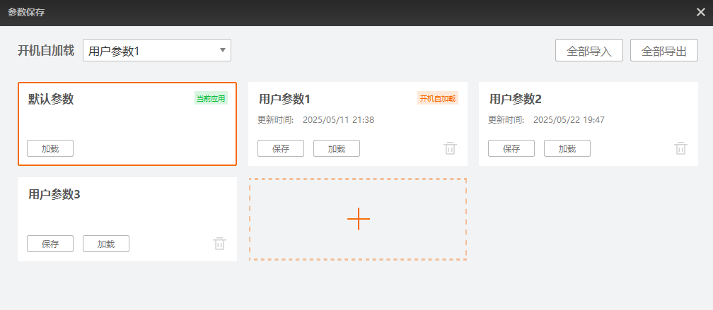

读码器完成相关功能设置后，需将参数保存至用户参数组，否则读码器重启后设置会失效。
单击快捷工具栏的进入参数保存窗口，选择一套用户参数并单击保存即可。
完成参数保存后，建议将保存的参数组设置为开机默认参数组，通过左上角的开机自加载下拉选择即可。
该窗口还支持默认参数切换、用户参数管理、参数自加载及参数导入/导出功能。以下为具体介绍。

仅含一套不可更改的出厂配置，仅限加载使用。
用户参数即自定义参数组，可新建、加载、保存和删除。
读码器出厂默认为3个用户参数组。V3.2.0及以上固件版本的固定式读码器最多支持8套用户参数组。
关于用户参数组，支持以下功能。
新建用户参数组：单击并输入参数组名称即可。
双击用户参数组名称，可修改名称。
删除用户参数组：单击具体参数组右下角的并确定即可。
保存用户参数组：单击具体参数组左下角的保存即可。
加载用户参数组：单击具体参数组左下角的加载即可。
您可通过该窗口左上角的开机自加载下拉选择读码器启动时自动加载的参数组。
当前读码器已有的默认参数和用户参数均可选择。
关于文件存取的具体介绍，详情参见连接后配置章节。
单击全部导入，选择同型号读码器导出的User Set.mfa文件并打开即可导入。
导入后，读码器的所有用户参数组会被重置为导入文件的内容，包括用户参数组的数量、名称及具体的参数值。
单击全部导出后选择存储路径并保存即可将读码器的所有用户参数组导出到一个.mfa文件中。
此处.mfa文件默认命名规则为：读码器型号_序列号_User Set。